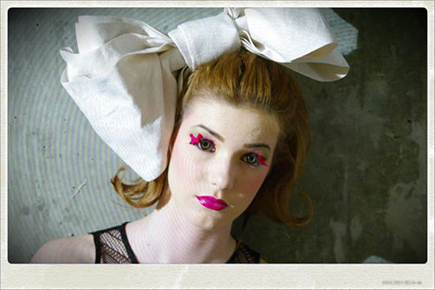
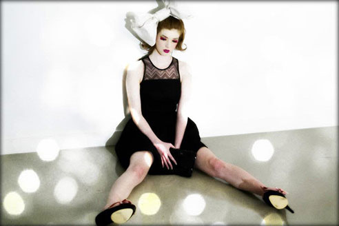
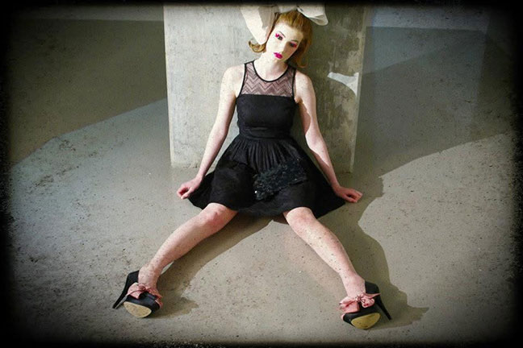
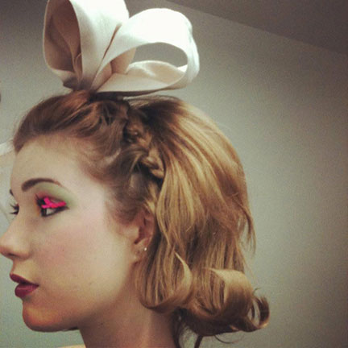
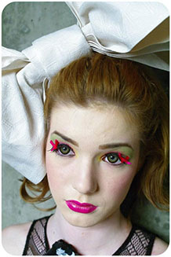
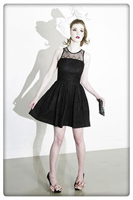

ファッション専門学校 卒業課題
リアルバービーをコンセプトに着物の帯で作った巨大リボンと定番のブラックミニドレスをポイントにスタイリング
| 制作日時 | 2012.6 | |
|---|---|---|
| クレジット | Model | Tia Ell Lee |
| Hair | Elena Ismail | |
| Makeup | Ou | |
| Photographer | Andrew Volk |


fashion
editorial


styling
カナダに留学中、1年間ファッション専門学校に通っておりました。スタイリングの授業の中で、卒業課題が自分がスタイリストとして雑誌の特集を想定して撮影を行う課題でした。


concept
barbie
コンセプトはリアルバービー。日本の実家から着物の帯を送ってもらい、巨大リボンをポイントに、体のラインが良く見えるAラインのミニドレスでバービースタイルを強調しました。スタイリストとして、衣装・ヘアメイク・ポージングのコンセプト設計。衣装は自分でお店からレンタルとして実際に交渉、ヘアメイクとモデル探し、カメラマンへの撮影イメージの共有まで行いました。
